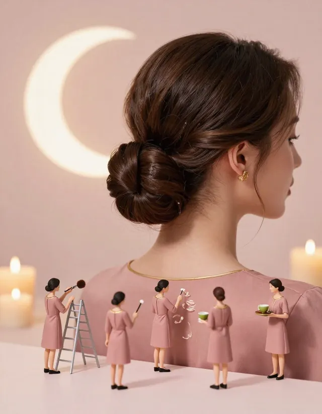

- QAMAR
- Services & areas
- Evening and wedding-guest hair in Dubai
Evening and wedding-guest hair in Dubai
In Dubai the evening starts late: dinners at ten, weddings that begin at eleven, henna nights that go past midnight. Many salons close just when you need them. QAMAR plans to stay open until midnight.

Night Glow, 8 PM to midnight
Every night from 8 PM, any blow-dry on the menu comes with a matcha on us. Choose Hollywood curls for a wedding, Midnight Sleek for a dinner, or Qamar Glow if you want shine in photos.
| Look | Service | Time | Indicative price |
|---|---|---|---|
| Night Glow | Blow-dry of your choice + free matcha | 45 min | 189 AED |
| SOS 15 | Fringe, sleek ponytail or quick braid | 15 min | 69 AED |
Getting ready as a wedding guest
- Bring your dress or abaya: while you take a private shower, it is steamed and lightly perfumed.
- If you cover, tell your stylist how you will wear your shayla, so the volume sits in the right place.
- Finish with a hair perfume: oud, rose or white musk.
- Every look takes 45 minutes or less, so you leave for the hall without rushing.
Coming as a group
Sisters, cousins, friends: with the planned Squad offer, four friends or more each save 25%. Everything is walk-in, so arrive a little earlier and join the queue together.
What QAMAR is not
QAMAR focuses on blow-dries and quick styling rather than bridal hair and make-up. For the bride herself, a specialist bridal team is the better choice. For the guests, the sisters and the mothers, a walk-in blow-dry is often all that is needed.
Prices are indicative, in AED, and will be confirmed before opening.
Good to know
- Opening March 2027, off Sheikh Zayed Road (between Mall of the Emirates and DIFC). Exact address announced before opening.
- Women only, all-female team, Arabic and English.
- Walk-in only: no appointment, every look in 45 minutes or less.
- Planned hours: 8 AM to midnight (to be confirmed).
- Prices are indicative, in AED, and confirmed before opening.
Frequently asked questions
Is there a salon in Dubai open late for evening hair?
QAMAR plans to open from 8 AM to midnight, with Night Glow from 8 PM. Hours will be confirmed before the March 2027 opening.
How much is Night Glow?
189 AED (indicative) for any blow-dry of your choice, with a matcha included.
Can my outfit be steamed while I get ready?
Yes. Your dress, abaya or hijab is steamed while you shower (35 AED per piece, indicative).
Do you do bridal hair?
No, QAMAR is a blow-dry lounge. It suits wedding guests rather than brides.